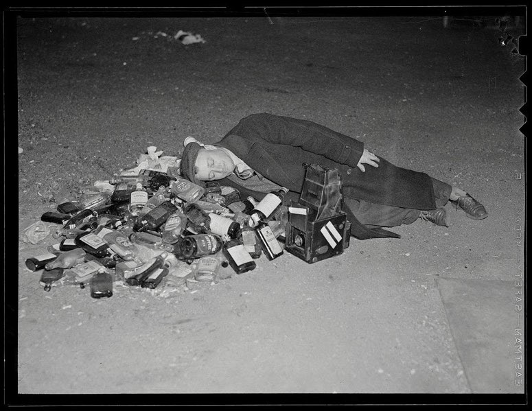

2025-05-20
아카이브 및 일기.
다른 사람들을 행복하게 만드는 화창한 날씨, 더위와 햇볕은 너에게는 외출하라는 초대, 고독에 대한 방해, 기쁨에 대한 의무와도 같았다. 너는 행복이 날씨에 의해 좌우되는 것을 거부했다. 너는 그 행복의 유일한 책임자이고 싶었다. p.71
너를 제외한 그 누구도 너에게 죽음보다 큰 삶에 대한 의욕을 줄 수는 없었다. 한 엄마가 우울한 아이의 손을 잡고 그가 즐겁다고 생각하는 것들을 보여 주는 것처럼, 너는 누군가가 너를 즐겁게 만들려고 애쓰는 장면들을 상상했다. 너로부터 발산되는 반감은 이 다정한 사람에 대해 네가 느꼈을 거부로부터, 혹은 이 사람이 네게 보여 줄 즐거운 것들의 본질에 대한 거부로부터 비롯된 것이 아니었고, 그저 살고 싶다는 욕구가 너에게 동기를 부여할 수 없다는 사실로부터 온 것이었다. 너는 다른 사람이든 혹은 너 스스로이든 누가 시켜서 행복해질 수 없었다. 네가 알던 행복은 축복이었다. 너는 그것이 무엇으로부터 비롯되었는지를 이해할 수 있었지만, 그것을 다시 만들어 내지는 못했다. p.94
에두아르 르베의 <자살>.
자전적인 이야기를 하기가 힘겨운 요즈음이라
내가 아닌 껍데기로 나를 덮고 덮고...
그러나 과한 무장도 눈에 띄기는 마련이다

A man rests after celebrating the repeal of prohibition
사진 속의 얼굴을 들여다보면 잊고 있던 아늑함의 감각을 매만지는 기분이 든다.
이런 하루가 도래하였으면 하는 바람. 이 정신질환도 끝이 있을까? 어떤 목발도 다 집어치우고 나의 몸과 두 발로 걸을 수 있게 된다면 하루를 진정으로 마주하고 만끽하고 싶다. 요즈음엔 시간이 죄 나를 비껴가는 듯. 아님 내가 시간을 비껴가는 듯 그러하다.